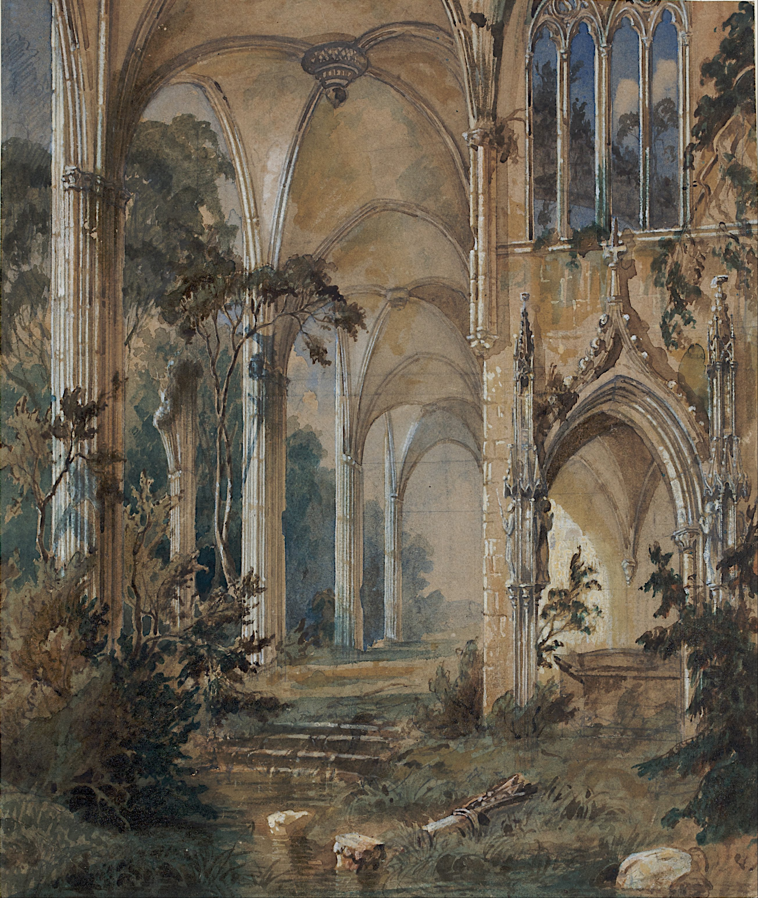
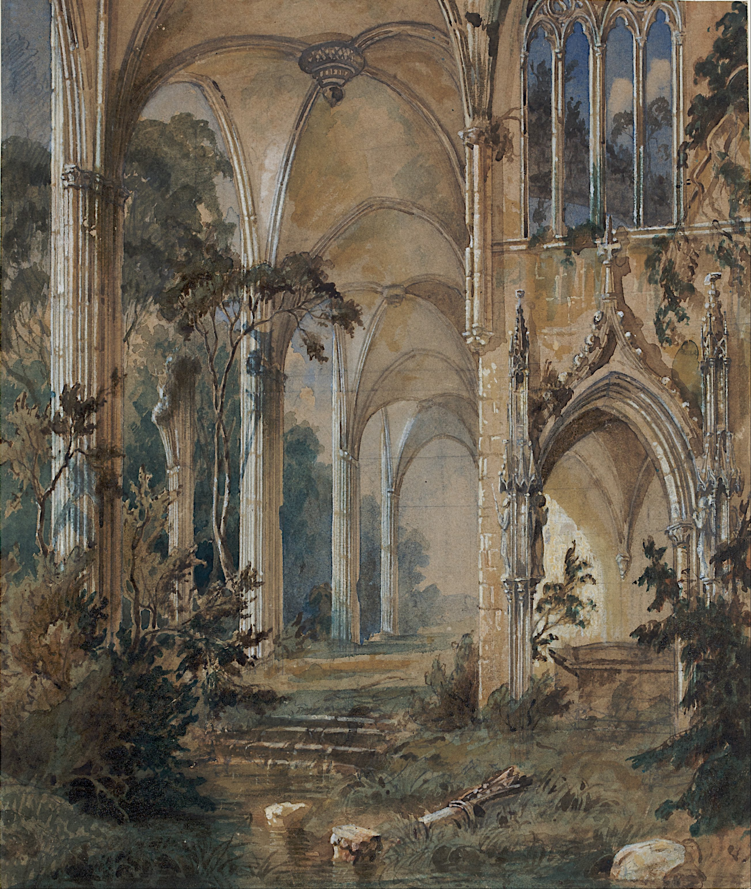
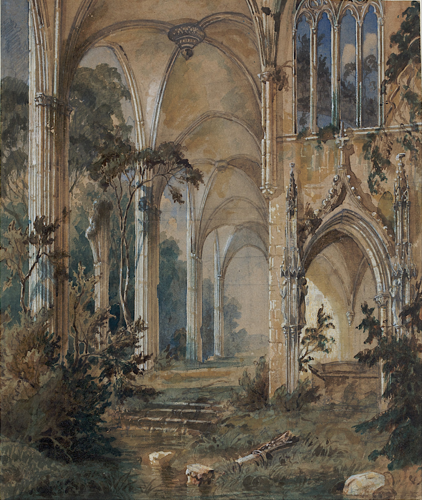

Galería
 

Nací en Lima, Perú, en el Hospital Rebagliati, y desde pequeño estuve rodeado de colores, texturas y contrastes que marcarían mi visión artística. Mi camino en el arte empezó de forma natural: desde niño me fascinaba observar los detalles en la naturaleza, las calles antiguas y la luz en distintos momentos del día. Con el tiempo, mi curiosidad se transformó en técnica, y mi técnica en una forma de expresión única. Mis influencias van desde el color vibrante y la energía de Van Gogh, la geometría alegre de Brito, hasta la majestuosidad clásica de Rafael. El resultado es un realismo con toques modernos, donde la luz, la textura y la emoción se entrelazan para contar historias visuales. Mis obras buscan ser un puente entre culturas: capturar la fuerza de nuestras raíces latinas y la visión contemporánea de quienes crecimos en un mundo global. Cada pintura es una conversación entre pasado y presente. Hoy, cada obra que creo es una pieza de mi historia y, quizás, de la tuya también. Te invito a recorrer mi galería y dejar que el arte hable por sí mismo.

Email: contacto@rivaelum.com
Instagram: @rivaelum